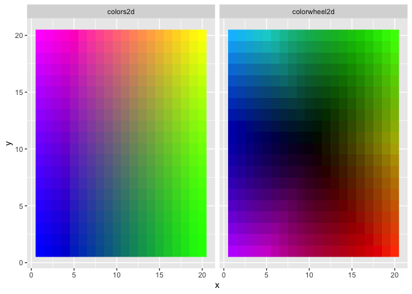
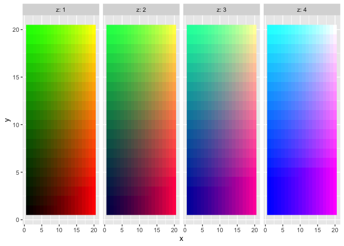

This R package provides functions to help generate two-dimensional and three-dimensional color gradient legends.
The three main functions, colors3d, colors2d, and colorwheel2d generate a color for each row of a user-supplied data set with 2-3 columns. These can then be used for plotting in various ways.
Installation
You can install colors3d from GitHub with devtools::install_github("matthewkling/colors3d") or from CRAN with install.packages("colors3d").
Examples
Here’s a simple application of the three color mapping functions. This example uses tidyverse, but this would all work in base R as well:
library(colors3d)
library(tidyverse)
# simulate a 3D data set
d <- expand_grid(x = 1:20, y = 1:20, z = 1:4)
# define and plot some 2D color mappings
d$colors2d <- colors2d(d[, 1:2])
d$colorwheel2d <- colorwheel2d(d[, 1:2])
d %>%
gather(mapping, color, colors2d, colorwheel2d) %>%
ggplot(aes(x, y, fill = color)) +
facet_wrap(~mapping) +
geom_raster() +
scale_fill_identity()
# define and plot a 3D color mapping
d$color3d <- colors3d(d[, 1:3])
d %>%
ggplot(aes(x, y, fill = color3d)) +
facet_wrap(~z, nrow = 1, labeller = label_both) +
geom_raster() +
scale_fill_identity() In a more realistic application, we often want to create a pair of plots for a given visualization: a “legend” in which the x and y dimensions match those used to create the color mapping, and a second plot in which the colors are then displayed in a different data space. This allows users to understand relationships among four dimensions of the data (or 5, if a 3D color mapping is used). Let’s use the storms dataset (from dplyr) as an example, with hurricane windspeed, size, longitude, and latitude as our variables of interest:
d <- na.omit(storms)
d$color <- colors2d(select(d, wind, hurricane_force_diameter),
xtrans = "rank", ytrans = "rank")
p1 <- ggplot(d, aes(wind, hurricane_force_diameter, color = color)) +
geom_point() +
scale_color_identity()
p2 <- ggplot() +
geom_polygon(data = map_data("state"),
aes(long, lat, group = group)) +
geom_path(data = d,
aes(long, lat, color = color,
group = paste(name, year))) +
scale_color_identity() +
coord_cartesian(xlim = range(d$long),
ylim = range(d$lat))
library(patchwork)
p1 + p2